7. Surrogate models¶
What, why and how¶
Use of simulators¶
A simulator can be viewed as a mathematical application \(f:\mathcal{X}\mapsto\mathcal{Y}\) computing the output \(y\) from the input \(x\). See the introduction for more details.
Toy model¶
In the following, we will illustrate the concept with a simple one-dimensional function
from the literature1.
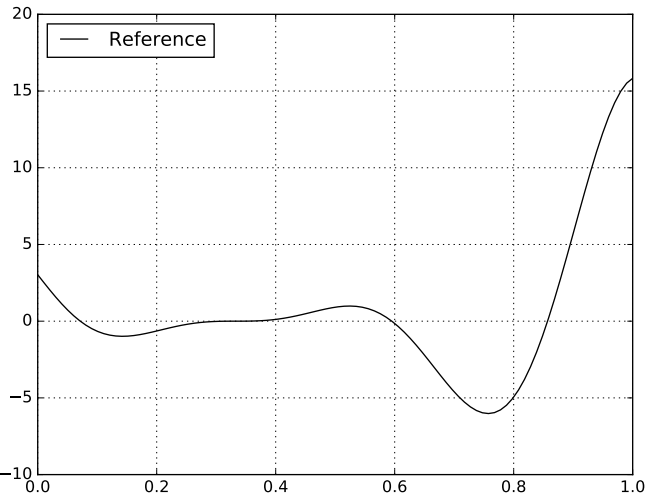
Limits of models in computer experimentation¶
Simulations are costly
- A single evaluation can be computationally expensive.
- The gradient is not always available, and if missing, gradient approximation is required.
So, optimization is costly:
- Minimizing \(f\) w.r.t. \(x\) by browsing the design parameter space, even intelligently, requires at least dozens or hundreds of evaluations of \(f\).
So, uncertainty quantification is costly:
- When the input \(x\) is uncertain, the output \(y:=f\left(x;u\right)\) is also uncertain. Sampling \(f\) over \(\mathcal{X}\ni x\) to quantify the output uncertainty (e.g., mean, the standard deviation, the probability of exceeding a threshold, quantile, ...) requires at least hundreds or thousands of evaluations of \(f\) over the uncertain variable space.
So, visualization is costly:
- Visualizing the behavior of \(f\) w.r.t. \(x\) requires at least hundreds or thousands of evaluations of \(f\) over the design parameter space.
Question
How to provide a cheap but accurate approximation of \(f\)?
From single output to multiple output¶
For the sake of clarity, we consider a model \(f\) with a scalar output \(y\).
The methodological and computational tools presented in this course can be extended to the multiple output case.
A classical approach consists of reducing the output dimension:
- Decompose the multiple output on an orthogonal basis, e.g. principal component analysis (PCA): \(f(x)=\sum_{i=1}^{\text{dim}(y)}\alpha_i(x)\varphi_i\) with \(\varphi_i\in\mathcal{Y}\).
- Keep the most significant modes of the basis: \(f_{\text{PCA}}(x)=\sum_{i=1}^{p\ll\text{dim}(y)}\alpha_i(x)\varphi_i\).
- For each significant mode, create a surrogate model \(\hat{\alpha}_i\) of \(\alpha_i\) (see how in the following sections).
- Provide a cheap but accurate approximation of \(f\) by combining the previous approximations: \(\hat{f}_{\text{PCA}}(x)=\sum_{i=1}^{p}\hat{\alpha}_i(x)\varphi_i\).
Approximating the simulator¶
We want to build an efficient emulator \(\hat{f}\) for the model \(f\).
Requirements¶
- Accuracy: \(\text{Error}(f,\hat{f})\leq \varepsilon\)
- Velocity: \(\text{EvaluationTime}(\hat{f})\ll\text{EvaluationTime}(f)\)
Solution¶
Use a surrogate model as emulator \(\hat{f}\), based on statistical and machine learning techniques.
A surrogate model is a regression or interpolation function
- defined over the input parameter space \(\mathcal{X}\),
- depending on hyperparameters \(\hat{\alpha}\in\mathcal{A}\),
- parametrized by learning a training dataset.
Training dataset:
- Create a design of experiments (DOE): \(x^{(1)},\ldots,y^{(n)}\).
- Evaluate the simulator \(f\): \(y^{(1)},\ldots,y^{(N)}\) where \(y^{(i)}=f(x^{(i)})\).
- Create the learning dataset: \(\mathcal{L}_N=\left\{(x^{(1)},y^{(1)}),\ldots,(x^{(N)},y^{(N)})\right\}\)
The learning stage consists of searching the hyperparameters \(\hat{\alpha}\) minimizing a learning error over \(\mathcal{A}\), e.g. the mean squared error \(\text{MSE}(\mathcal{L}_{N})=N^{-1}\sum_{i=1}^N\left(y^{(i)}-\hat{f}_\hat{\alpha}\left(x^{(i)}\right)\right)^2\).
Toy model - Learning and test samples
10 learning samples and 3 test samples:
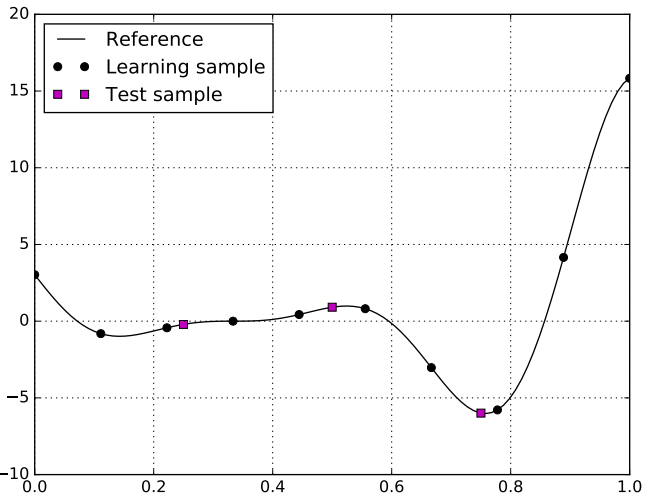
Quality of a surrogate model¶
Learning error¶
Have we learned the learning set well?
Generalization error¶
How far is \(\hat{f}\) from \(f\)? Less than \(\varepsilon\)?
Test error¶
Have we learned the model behavior well? When we have an additional input-output dataset \(\mathcal{T}_{N}\), called test set:
Warning
When the total number of evaluations \(N+N_t\) is very limited, learning from \(N\) samples and testing on \(N_t\) samples rather than learning from all \(N+N_t\) samples can drastically reduce the quality of the surrogate model.
Toy model - Learning and test errors
Toy model where the surrogate model is a linear regression. Errors (learning, test, generalization)=(5.1, 5.2, 4.5).
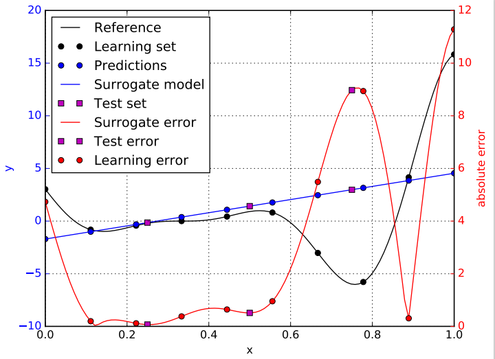
Cross-validation (CV) error¶
Have we learned the model behavior well?
We split the learning input-output set \(\mathcal{L}_N\) into \(K\in\{1,\ldots,N\}\) folds:
Then, for any \(k\in\{1,\ldots,K\}\),
- we build a new surrogate model by learning all \(\mathcal{L}_N\) but \(\mathcal{F}_{N,k}\),
- we measure its accuracy on \(\mathcal{F}_{N,k}\).
Finally, the cross-validation error averages these \(K\) accuracies:
Leave-one-out (LOO) error¶
Have we learned the model behavior well?
The LOO error is a specific case of the CV error with \(K=N\) folds. In this case, a fold is reduced to a single sample \(\mathcal{F}_{N,k}=(x^{(k)},y^{(k)})\).
Toy model - Learning and test errors
Toy model where the surrogate model is a linear regression. Leave-one-out error = -0.689.
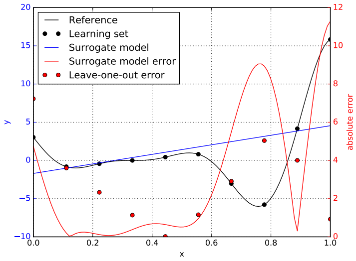
Q2 score¶
where \(m\) is a function returning the constant \(N^{-1}\sum_{i=1}^Ny^{(i)}\) with \(y^{(1)},\ldots,y^{(N)}\) the learning output samples.
How much better than the learning output mean?
- \(<0\): performance poorer than the learning output mean,
- \(=0\): performance similar to the learning output mean,
- \(=1\): great performance (test error is 0).
In practice, we hope that
- \(Q^2\in[0,1]\)
- \(Q^2>q_{\text{thresh}}^2\) for some \(q_{\text{thresh}}\in[0,1]\), e.g. \(q_{\text{thresh}}=0.9\)
Toy model - Learning and test errors
Toy model where the surrogate model is a linear regression. \(Q^2\) (learning, test, generalization)=(0.132, -1.945, 0.032).
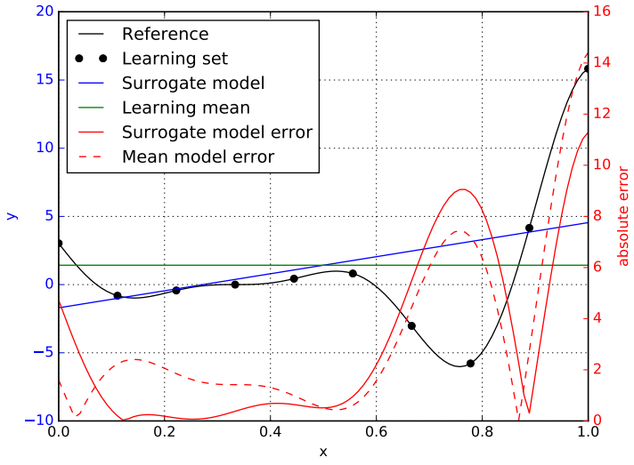
Different surrogate models¶
Linear regressors¶
Expression:
with \(\alpha\in\mathbb{R}^p\) and \(p=1+d\).
Learning
Optimum
where \(\mathbf{X}_{i,1}=1\), \(\mathbf{X}_{i,j+1}=x_j^{(i)}\) and \(\mathbf{Y}_{i,1}=y^{(i)}\), \(x_j^{(i)}\) (resp. \(y^{(i)}\)) being the \(i^{\text{th}}\) learning value of the input \(x_j\) (resp. output \(y\)), and \(\mathbf{1}_N\) is the \(N\)-length unit vector.
Pros:
- The training is easy as it is based on fundamentals of linear algebra,
- The explainability is easy: if \(\alpha_i>0\) (resp. \(<0\)), the surrogate model increases (resp. decreases) monotonically with \(x_i\).
Cons:
- There is a strong hypothesis: the model \(f\) is linear without any interaction.
Toy model - Linear model
Radial basis function (RBF) regressors¶
Expression:
with \(\alpha\in\mathbb{R}^p\) and \(p=1+N\).
\(x\mapsto\kappa_{\ell}(x,x^{(i)})\) is a radial basis function with:
- user-defined length scale hyperparameter \(\ell\),
- position hyperparameter \(x^{(i)}\).
Here is an example of radial basis function:
Learning
Optimum
where \(\mathbf{K}_{\ell,i,j+1}=\kappa_{\ell}\left(x^{(i)}-x^{(j)}\right)\) and \(\mathbf{Y}^{(i)}=y^{(i)}\).
Pros:
- The training is easy as it is based on fundamentals of linear algebra,
- The explainability is medium: weighted sum of learned outputs, the weights tending to zero as \(x\) moves away from \(x^{(i)}\).
Cons:
- The structure of this model is dependent on the learning dataset size.
Toy model - RBF model
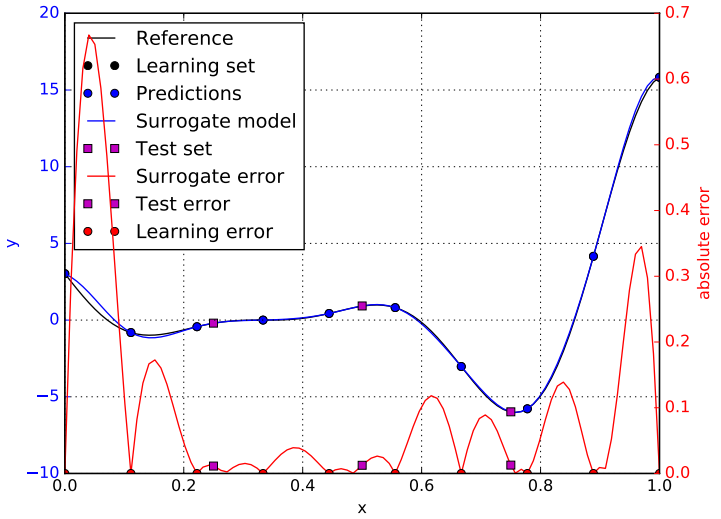
Toy model - RBF model - Decomposition
Decomposition of the surrogate model into a sum of weighted of radial basis functions:
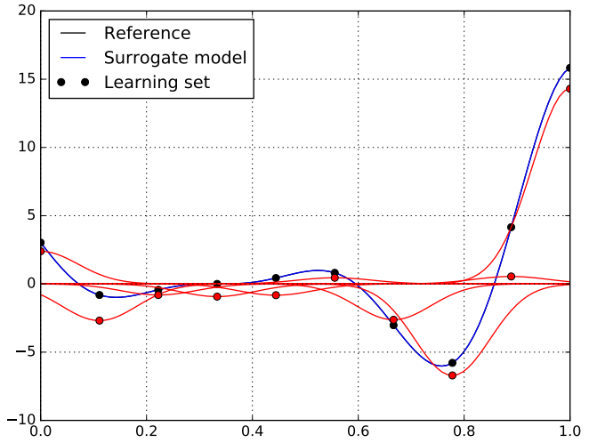
Toy model - RBF model - Basis functions
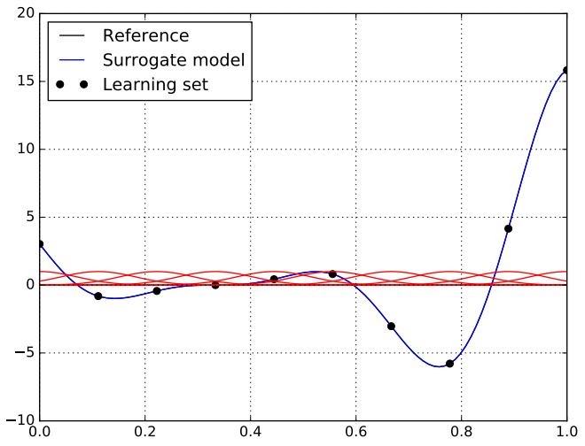
Gaussian process (GP) regressors¶
GP models are also called Kriging models.
Expression:
with \(\alpha\in\mathbb{R}^p\) and \(p=p_{\mu}+p_{\ell}\).
Estimator of the local prediction error
Notations:
- \(\kappa_{\ell}\left(x,x'\right)\) is stationary kernel function, a.k.a. correlation function, depending on the distance \(\|x-x'\|_2\)
- \(K_{\ell}=\left(\kappa_{\ell}\left(x^{(i)},x^{(j)}\right)\right)_{1\leq i,j\leq N}\) is the learning correlation matrix,
- \(k_{\ell}(x)=\left(\kappa_{\ell}\left(x,x^{(i)}\right)\right)_{1\leq i \leq N}^T\) is the correlation column vector at \(x\) w.r.t. learning design of experiments
- \(\sigma\) is the noise level.
Learning
- Given \(\hat{\alpha}_{\ell}\), the optimum \(\hat{\alpha}_{\mu}\) has a closed-form expression: \(\hat{\alpha}_{\mu}=\left(\mathbf{K}_{\ell}^T\mathbf{K}_{\ell}\right)^{-1}\mathbf{K}_{\ell}\mathbf{Y}\) where \(\mathbf{K}_{i,1}=1\), \(\mathbf{K}_{i,j+1}=\kappa_{\ell}\left(x^{(i)},x^{(j)}\right)\) and \(\mathbf{Y}_{i}=y^{(i)}\).
- Then, \(\alpha_{\ell}\) is obtained by numerical non-linear optimization for a fixed value \(\alpha_{\mu}\).
- Then, we iterate.
Advantages:
- The training is medium, as it combines fundamentals of linear algebra and numerical optimization for length scale \(\alpha_{\ell}\) (sensitive to small learning sample size \(N\)).
- The surrogate model provides a local error measure \(s_\alpha\).
- The explainability is medium as the surrogate model is the weighted sum of learned outputs with weight \(w_i(x)\) tending to zero when \(\|x-x^{(i)}\|\) tends to infinity.
- Structure: size - \(p\) increases no more than linearly with \(d\) (commonly, \(\mu(x,\alpha_{\mu})=\alpha_{\mu,0}\) or \(\alpha_{\mu,0}+\sum_{i=1}^d\alpha_{\mu,i}x_i\)).
- Uncertainty as we model \(f\) as an instance of a random process; useful for reliability, active learning design, efficient global optimization, ...
Drawbacks:
- The hypothesis is strong: \(f\) is an instance of a Gaussian process.
Toy model - GP model
Matern(5/2) kernel and \(\mu(x;\alpha_0):=\alpha_0\). The blue envelope represents the 95% confidence interval of the surrogate model:
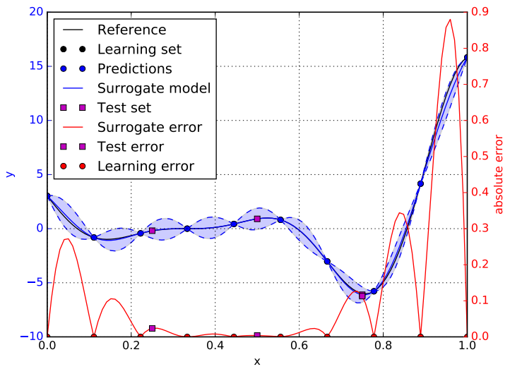
Toy model - GP model - Decomposition
Decomposition of the surrogate model into a sum of weighted of radial basis functions:
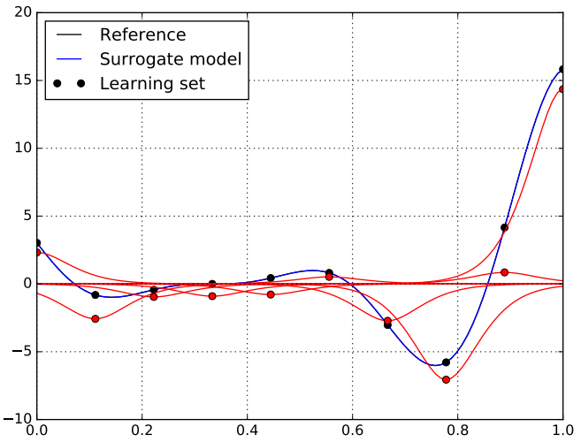
Toy model - GP model - Basis functions
Polynomial chaos expansion (PCE)¶
Expression:
with \(\alpha\in\mathbb{R}^p\) and \(\Psi_i(x)=\prod_{j=1}^d\Psi_{\tau_j(i),j}(x_j)\) where:
- \(\left(\Psi_{i,j}\right)_{i\geq 1}\) is an orthonormal polynomial basis, i.e. \(\mathbb{E}\left[\Psi_{i,j}(X_j)\Psi_{i',j}(X_j)\right]=\delta_{ii'}\),
-
\(\tau=\left(\tau_1,\ldots,\tau_d\right):\{i,\ldots,p-1\}\mapsto \mathbb{N}^d\) is an enumerating function.
-
PCE are stochastic models whose inputs are random variables \(\mathbf{X}\) and are often used to deal with uncertainty quantification problems.
When the problem is deterministic, we can still use PCE under the assumptions that the random variables \(X_1,X_2,\ldots,X_d\) are independent uniform random variables. Then, \(\left(\Psi_{i,j}\right)_{i\geq 1}\) is the Hermite basis:
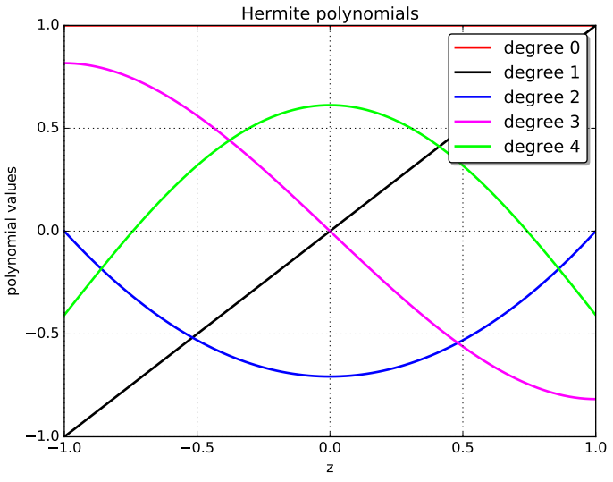
Learning¶
Classical methods dedicated to the learning of a PCE surrogate model.
Learning by least square regression
Optimum
where \(\mathbf{\Psi}_{i,1}=1\), \(\mathbf{\Psi}_{i,j+1}=\Psi_{j}(\mathbf{x}^{(i)})\) and \(\mathbf{Y}_{i}=y^{(i)}\).
Learning by sparse least square regression
Useful when \(N<p\)
Learning by quadrature
By orthonormality, we have that \(\forall i\geq 1\), \(\alpha_i=\mathbb{E}\left[\left(f(\mathbf{X})-\alpha_0\right)\Psi_i(\mathbf{X})\right]\) and \(\alpha_0=\mathbb{E}[f(\mathbf{X})]\).
Then, \(\left(\hat{\alpha}_i\right)_{i\geq 0}\) are obtained by quadrature techniques.
Enumerating strategy¶
The choice of the function \(\tau=(\tau_1,\ldots,\tau_d)\) is an enumerating strategy and \(\tau_j(i)\) is the degree of \(\Psi_{\tau_j(i),j}\).
PCE degree¶
A PCE is defined by its degree, \(P\in\mathbb{N}_+\).
\(\forall i\in\{1,\ldots,p-1\}\), \(\text{degree}\left(\Psi_{i}\right)=\sum_{j=1}^{d}\tau_j(i)\leq P\).
Linear enumerating strategy with \(d=2\):
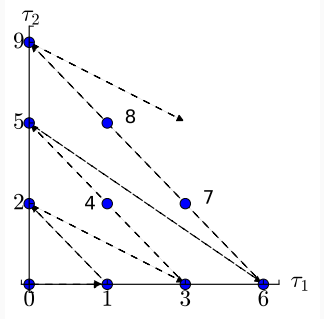
Pros:
- The training is medium, as it relies on fundamentals of linear algebra or quadrature but may require advanced techniques when the number of learning samples is too small.
- The model only requires that \(f\) has a finite variance, i.e. \(\mathbb{E}[f(\mathbf{X})^2]<\infty\).
- The PCE can provide analytical expressions for mean, variance and Sobol' indices
- The explainability is not so easy as a PCE is polynomial regressor with many interactions between input parameters.
Cons:
- Structure: the number of parameters to be estimated \(p\) increases exponentially with \(d\).
- When your software library does not provide default settings, you have to choose training, truncation and enumerating strategies, as well as PCE degree, which can be a bit complicated.
PCE
Polynomial chaos expansion model with a degree equal to 5.

Comparison¶
| Linear | RBF | GPR | PCE | |
|---|---|---|---|---|
| Configuration | - | Gaussian | Matern(5/2) | degree=5 |
| # parameters | 2 | 11 | 2 | 6 |
| \(Q^2\) score | 0.032 | 0.998 | 0.995 | 0.897 |
| RMSE | 4.49 | 0.17 | 0.33 | 1.47 |
| Mean AE | 3.02 | 0.1 | 0.22 | 1.13 |
| Median AE | 1.08 | 0.04 | 0.10 | 0.85 |
| std | 4.41 | 0.17 | 0.32 | 1.45 |
| Mean | -0.88 | -0.06 | -0.09 | 0.22 |
| Minimum | -9.05 | -0.67 | -0.84 | -2.60 |
| 1st quartile | -2.54 | -0.08 | -0.17 | -0.77 |
| Median | -0.52 | -0.01 | -0.01 | 0.22 |
| 3rd quartile | -0.04 | 0.01 | 0.02 | 0.95 |
| Maximum | 11.29 | 0.17 | 0.85 | 3.75 |
Be careful: configurations are not optimized!
Towards the best surrogate model¶
Different families of surrogate models: linear regression, radial basis function, Gaussian process regression, polynomial chaos expansion, ...
- We train surrogate models of different architectures (e.g, covariance kernel) taken from different families (e.g., GP models), by minimizing a learning error.
- Among each family, we select the surrogate model whose architecture minimizes a test error or a cross-validation error.
- Over the different families, we select the surrogate model minimizing a test error or a cross-validation error.
-
Alexander I. J. Forrester, Andras Sobester, and Andy J. Keane. Engineering Design via Surrogate Modelling - A Practical Guide. Wiley, 2008. ISBN 978-0-470-06068-1. ↩